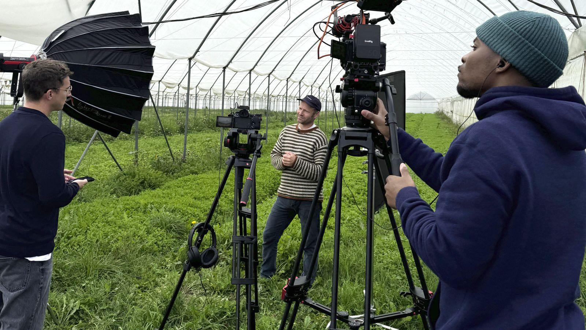
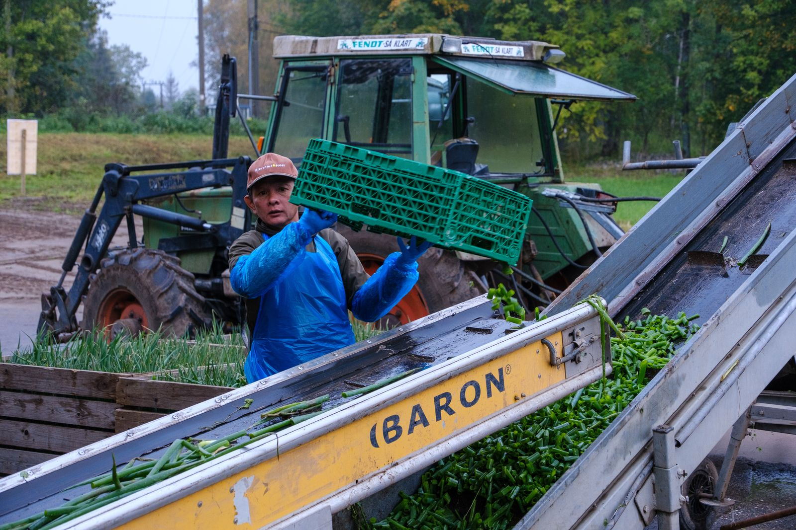
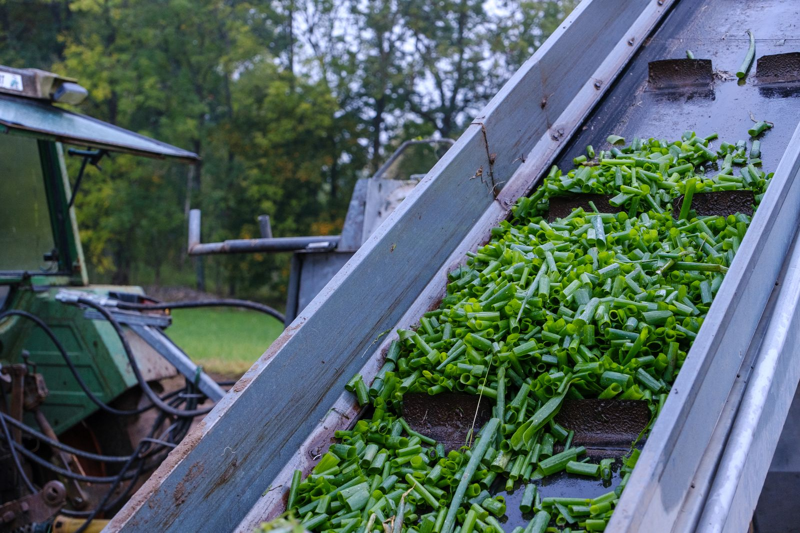
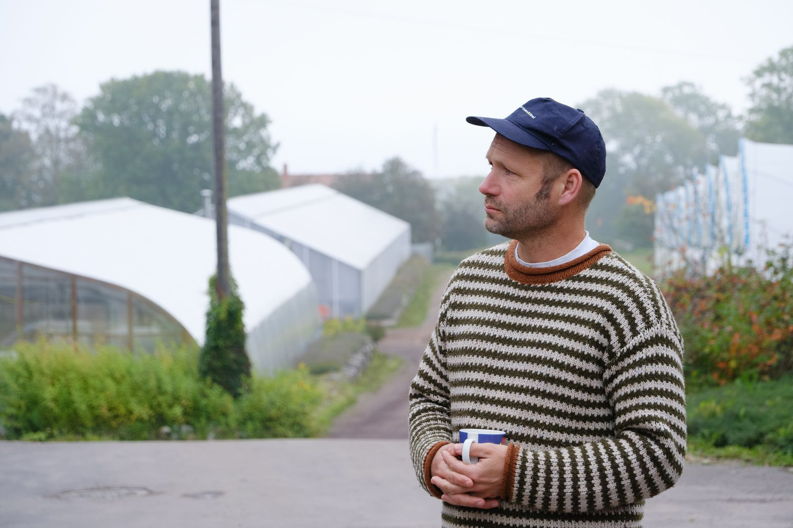
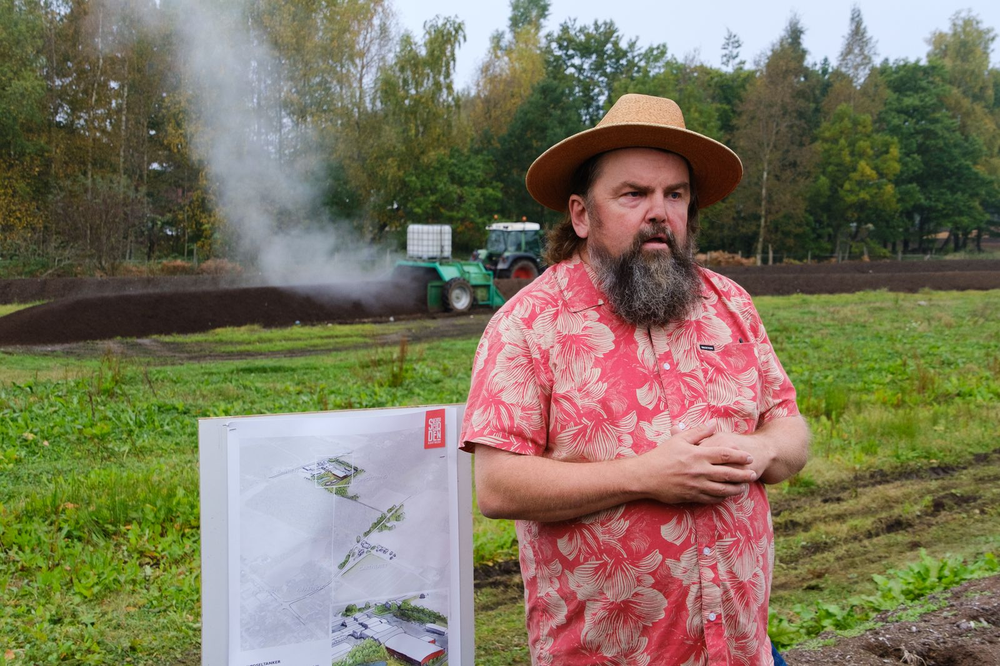

NorgesGruppen HANDLE – bærekraftskommunikasjon gjort konkret
For NorgesGruppens bærekraftsfond HANDLE har SALO bistått med kommunikasjon, pressearbeid og innholdsproduksjon – som bidrag til at flere aktører i den norske verdikjeden for mat og drikke søker støtte til sine bærekraftprosjekter.






HANDLE støtter prosjekter som kan bidra til økt bærekraft i norsk mat- og drikkeproduksjon. Kommunikasjonen skal både synliggjøre fondet og gjøre prosjektene, erfaringene og søknadsmulighetene forståelige og relevante for flere.
SALO har bistått med grunnleggende rådgivning, mediearbeid, pressemeldinger, tekstproduksjon og innholdsproduksjon. Arbeidet har blant annet handlet om å gjøre kjent nye søknadsrunder, og å fortelle om prosjekter som har mottatt støtte.
Fondet – og prosjektene som støttes – har fått bred oppmerksomhet i tradisjonelle medier. Innholdet forklarer hva fondet gjør, viser hvordan støtten virker i praksis og inviterer flere relevante aktører til å søke.
Innholdsproduksjon for HANDLE: manus, film og ferdig leveranse. Skjærgården Gartneri har fått støtte fra bærekraftsfondet. Filmen ligger hos Vimeo og lastes først når du trykker avspill.
Se tjenesten ↗
02 — SynlighetSe tjenesten ↗
03 — ProduksjonSe tjenesten ↗
Servering, forbruker
Case 08Kultur, egeneid
Case 01Merkevare, sport
Trenger du et erfarent blikk på en kommunikasjonsutfordring, eller noen som kan få arbeidet ferdig?
Ta kontakt med oss, så finner vi tid for et effektivt arbeidsmøte.
post@salokommunikasjon.no